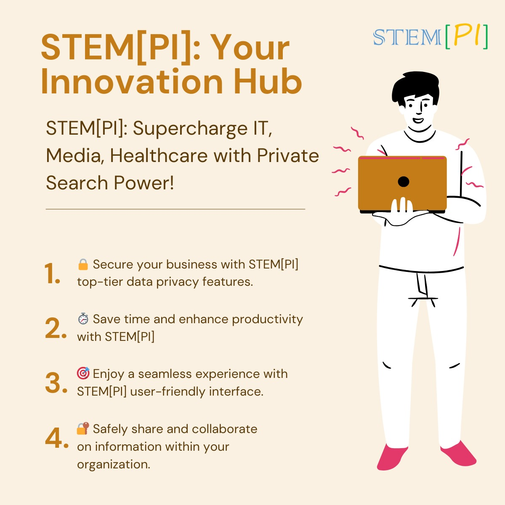

Navigating the Future: STEM[PI] - Transforming Workplace Dynamics, Elevating Employee Experience
30 Dec, 2023
Table of Contents
-
Transforming Workplace Dynamics with STEM[PI]
- Introduction to STEM[PI]'s Role in Employee Experience
- The Power of Private Search Engines in Modern Organizations Navigating the Employee Journey: STEM[PI] Unveiled
- Onboarding Excellence: STEM[PI]'s Impact on New Hires
- Continuous Learning Made Simple with STEM[PI] Privacy and Productivity: A Dual Approach with STEM[PI]
- Ensuring Privacy in Internal Information Access
- Boosting Productivity Through Efficient Search Strategies Crafting a Personalized Knowledge Space: STEM[PI]'s Advantage
- Customizing Content Access for Individual Employees
- Fostering Collaboration through Tailored Information Sharing Mastering Company Culture: A Guide with STEM[PI]
- Cultivating a Knowledge-Centric Organizational Culture
- Building Connections through Private Search in Teams The STEM[PI] Experience: Elevating Employee Learning
- Driving Professional Development with STEM[PI]
- Unlocking Hidden Expertise within Your Organization Unleashing Potential: Private Search for Teams with STEM[PI]
- Facilitating Team Collaboration through Private Search
- Optimizing Teamwork and Performance with STEM[PI] Privacy Matters: Ensuring Data Security with STEM[PI]
- The Role of STEM[PI] in Safeguarding Sensitive Information
- Compliance and Confidentiality: STEM[PI]'s Commitment
- User-Centric Security Features: Navigating the STEM[PI] Experience The Evolution of Internal Search: STEM[PI]'s Breakthrough
- A Historical Perspective on Internal Search Engines
- STEM[PI]'s Contribution to the Future of Information Retrieval
- Machine Learning and AI: Powering STEM[PI]'s Intelligent Search
- Enhancing User Experience: STEM[PI]'s Intuitive Interface
- Integration with Emerging Technologies: STEM[PI]'s Technological synergy
- Feedback-Driven Iterations: How STEM[PI] Adapts to User Needs
- Case Studies: Real-world Impact of STEM[PI]'s Evolution
- Looking Ahead: STEM[PI]'s Roadmap in the Internal Search Landscape Revolutionizing Employee Engagement: STEM[PI] Unleashed
- Engaging Employees through Accessible Knowledge
- Creating a Positive Employee Experience with STEM[PI]
- Expanding on Employee Engagement
- Measuring Employee Engagement Metrics
- Integration with Employee Recognition Programs
- Supporting Remote and Hybrid Work Environments
- Employee Training and Development
- Fostering a Culture of Inclusivity
- User Success Stories Conclusion
- STEM[PI]'s Impact and Future Outlook
Transforming Workplace Dynamics with STEM[PI]
In this section, we will explore how STEM[PI] revolutionizes the way workplaces function, bringing a paradigm shift to internal information access and collaboration.
Introduction to STEM[PI]'s Role in Employee Experience
Discover the fundamental role that STEM[PI] plays in shaping a positive employee experience. This subheading will provide an overview of the significance of efficient information retrieval and knowledge sharing within a workplace setting.
The Power of Private Search Engines in Modern Organizations
Delve into the contemporary landscape of organizational dynamics and the pivotal role private search engines like STEM[PI] play. This subheading will highlight the unique advantages and transformative power that STEM[PI] brings to the table, ensuring privacy without compromising productivity. It will touch upon the broader context of why private search engines are becoming essential in the modern workplace.
Navigating the Employee Journey: STEM[PI] Unveiled
This section will guide readers through the employee journey within an organization and unveil how STEM[PI] enhances each stage, from onboarding to continuous learning.
Onboarding Excellence: STEM[PI]'s Impact on New Hires
Explore how STEM[PI] contributes to a seamless onboarding experience for new hires. This subheading will delve into the specific features and capabilities of STEM[PI] that facilitate quick access to essential information, accelerating the integration of new team members into the organization.
Continuous Learning Made Simple with STEM[PI]
Delve into how STEM[PI] transforms the landscape of continuous learning within the workplace. This subheading will highlight the platform's ability to provide employees with easy access to relevant and up-to-date information, fostering a culture of ongoing education and skill development.
Privacy and Productivity: A Dual Approach with STEM[PI]
This section will emphasize the dual benefits of privacy and productivity that STEM[PI] brings to the workplace, exploring how it strikes a balance between safeguarding sensitive information and enhancing overall efficiency.
Ensuring Privacy in Internal Information Access
Delve into the privacy-centric features of STEM[PI] that secure internal information access. This subheading will outline the measures taken by STEM[PI] to ensure that sensitive company data remains confidential and accessible only to authorized personnel, contributing to a secure working environment.
Boosting Productivity Through Efficient Search Strategies
Explore how STEM[PI] optimizes productivity by offering efficient search strategies. This subheading will discuss the tools and functionalities within STEM[PI] that enable employees to find the information they need quickly, streamlining workflow and contributing to increased overall productivity.
Crafting a Personalized Knowledge Space: STEM[PI]'s Advantage
This section will explore how STEM[PI] allows organizations to tailor their knowledge spaces, creating a personalized and efficient environment for employees to access information.
Customizing Content Access for Individual Employees
Delve into the customization features of STEM[PI] that empower organizations to tailor content access for individual employees. This subheading will discuss how administrators can set preferences, ensuring that each team member has access to the specific information relevant to their role and responsibilities.
Fostering Collaboration through Tailored Information Sharing
Explore how STEM[PI] fosters collaboration by facilitating tailored information sharing. This subheading will highlight the collaborative aspects of STEM[PI], showcasing how teams can share pertinent information seamlessly, enhancing teamwork and collective knowledge.
Mastering Company Culture: A Guide with STEM[PI]
This section will delve into how STEM[PI] becomes an integral part of shaping and enhancing the company culture, emphasizing a knowledge-centric environment.
Cultivating a Knowledge-Centric Organizational Culture
Explore how STEM[PI] contributes to fostering a knowledge-centric culture within the organization. This subheading will discuss the importance of cultivating an environment where information is valued, shared, and becomes a key driver of organizational success.
Building Connections through Private Search in Teams
Discover how STEM[PI] aids in building connections among team members through its private search capabilities. This subheading will emphasize how the platform facilitates information sharing within teams, promoting collaboration and strengthening the bonds among employees.
The STEM[PI] Experience: Elevating Employee Learning
This section will provide insights into how the STEM[PI] experience enhances the learning journey for employees within the organization.
Driving Professional Development with STEM[PI]
Explore how STEM[PI] becomes a driving force behind professional development. This subheading will focus on how the platform supports employees in acquiring new skills and knowledge, contributing to their ongoing growth and development within the organization.
Unlocking Hidden Expertise within Your Organization
Delve into how STEM[PI] helps unlock and leverage hidden expertise within the organization. This subheading will highlight how the platform facilitates the discovery of valuable knowledge and skills that might otherwise go unnoticed, promoting a culture of expertise sharing.
Unleashing Potential: Private Search for Teams with STEM[PI]
This section will explore how STEM[PI] empowers teams by providing a private and efficient search experience tailored to collaborative efforts.
Facilitating Team Collaboration through Private Search
Discover how STEM[PI] facilitates seamless collaboration within teams. This subheading will discuss the ways in which STEM[PI]'s private search capabilities contribute to effective teamwork, ensuring that team members can access and share relevant information securely.
Optimizing Teamwork and Performance with STEM[PI]
Explore how STEM[PI] optimizes teamwork and enhances overall team performance. This subheading will delve into specific features of STEM[PI] that contribute to improved efficiency and productivity within team settings, ultimately fostering a positive and collaborative work environment.
Privacy Matters: Ensuring Data Security with STEM[PI]
In this section, we'll thoroughly explore how STEM[PI] prioritizes and ensures the utmost data security for organizations, maintaining the confidentiality of sensitive information.
The Role of STEM[PI] in Safeguarding Sensitive Information
Dive into the core mechanisms that STEM[PI] employs to safeguard sensitive organizational data. From robust encryption methods to access controls, this subheading will shed light on the proactive measures STEM[PI] takes to protect critical information from unauthorized access or breaches.
Compliance and Confidentiality: STEM[PI]'s Commitment
Explore STEM[PI]'s commitment to compliance with industry standards and regulations, ensuring that the platform aligns with the highest levels of confidentiality. This subheading will detail how STEM[PI] not only meets but exceeds the privacy and security expectations set by regulatory bodies, fostering trust among users.
User-Centric Security Features: Navigating the STEM[PI] Experience
Delve into the user-centric security features within STEM[PI] that empower organizations to take control of their data. This subheading will highlight features such as multi-factor authentication, activity logs, and customizable access levels, demonstrating how STEM[PI] provides administrators with the tools needed to maintain a secure information environment.
The Evolution of Internal Search: STEM[PI]'s Breakthrough
In this comprehensive exploration, we'll journey through the transformative impact of STEM[PI] on internal search mechanisms, highlighting its evolution and groundbreaking contributions to information retrieval within organizations.
A Historical Perspective on Internal Search Engines
To truly appreciate STEM[PI]'s breakthrough, let's delve into a historical context of internal search engines. From the early days of basic search functionalities to the growing complexities of information retrieval, this subheading will paint a picture of the challenges organizations faced before solutions like STEM[PI] emerged.
STEM[PI]'s Contribution to the Future of Information Retrieval
Uncover how STEM[PI] is not just addressing current needs but is shaping the future of information retrieval. This subheading will explore the advanced technologies and innovations embedded within STEM[PI] that position it as a trailblazer in the evolution of internal search engines.
Machine Learning and AI: Powering STEM[PI]'s Intelligent Search
Delve into the intricate details of how STEM[PI] leverages machine learning and artificial intelligence to deliver an intelligent search experience. Discuss the algorithms and smart features that enable STEM[PI] to understand user behavior, adapt to evolving content structures, and continuously refine search results for maximum relevance.
Enhancing User Experience: STEM[PI]'s Intuitive Interface
Explore the user-centric design principles that make STEM[PI] a leader in enhancing user experience. This subheading will delve into the intuitive interface, highlighting features such as predictive search, natural language processing, and personalized recommendations that make information retrieval seamless and efficient for users at all levels.
Integration with Emerging Technologies: STEM[PI]'s Technological Synergy
Discuss how STEM[PI] seamlessly integrates with emerging technologies. Whether it's compatibility with voice-activated search, integration with augmented reality interfaces, or synchronization with the latest collaborative tools, this subheading will demonstrate how STEM[PI] stays ahead of the curve in technological synergy.
Feedback-Driven Iterations: How STEM[PI] Adapts to User Needs
Highlight the iterative nature of STEM[PI]'s development, emphasizing how user feedback plays a pivotal role in shaping its features. Discuss the agile development methodology, showcasing how STEM[PI] consistently evolves to meet the dynamic demands of modern workplaces.
Case Studies: Real-world Impact of STEM[PI]'s Evolution
Back up theoretical discussions with real-world examples. Explore case studies that showcase organizations successfully leveraging STEM[PI]'s evolving capabilities to streamline internal search, improve collaboration, and drive overall efficiency.
Looking Ahead: STEM[PI]'s Roadmap in the Internal Search Landscape
Provide insights into STEM[PI]'s future roadmap. Discuss upcoming features, potential expansions, and the platform's commitment to staying at the forefront of the internal search landscape, ensuring that organizations using STEM[PI] are equipped with the latest and most advanced tools for information retrieval.
Revolutionizing Employee Engagement: STEM[PI] Unleashed
In this section, we'll dive deep into how STEM[PI] becomes a catalyst for revolutionizing employee engagement within organizations, reshaping the way teams collaborate and interact.
Engaging Employees through Accessible Knowledge
Explore how STEM[PI] actively engages employees by providing seamless access to knowledge. This subheading will delve into how the platform acts as a gateway for employees to explore, contribute, and stay informed about the wealth of information within the organization, fostering a culture of continuous learning.
Creating a Positive Employee Experience with STEM[PI]
Examine how STEM[PI] contributes to crafting a positive employee experience. This subheading will focus on the user-friendly features, intuitive interface, and personalized content delivery that collectively enhance the overall experience, making information retrieval a positive and empowering aspect of daily work life.
Expanding on Employee Engagement
Explore how STEM[PI] goes beyond traditional methods to actively involve employees in the knowledge-sharing process. Discuss features such as collaborative content creation, discussion forums, and interactive elements that encourage employees to contribute their insights and engage with the organizational knowledge base.
Measuring Employee Engagement Metrics
Delve into the metrics and analytics features within STEM[PI] that allow organizations to measure employee engagement effectively. Discuss how administrators can gain insights into which content is most accessed, identify areas of interest, and assess the overall impact of STEM[PI] on employee engagement levels.
Integration with Employee Recognition Programs
Highlight how STEM[PI] can seamlessly integrate with employee recognition programs. Discuss the importance of acknowledging and rewarding employees for their contributions to the knowledge base, creating a positive feedback loop that encourages continuous engagement and participation.
Supporting Remote and Hybrid Work Environments
Explore how STEM[PI] becomes a crucial tool for organizations embracing remote and hybrid work models. Discuss the challenges of maintaining employee engagement in dispersed teams and showcase how STEM[PI]'s features cater to the needs of remote collaboration, ensuring that employees feel connected regardless of their physical location.
Employee Training and Development
Examine how STEM[PI] extends beyond information retrieval to support employee training and development. Discuss features such as on-demand training modules, skill-building resources, and personalized learning paths that contribute to the continuous professional growth of employees within the organization.
Fostering a Culture of Inclusivity
Explore how STEM[PI] fosters a culture of inclusivity by ensuring that information is accessible to all employees, regardless of their role or level within the organization. Discuss accessibility features, language support, and content translation capabilities that contribute to a workplace culture where everyone feels included and empowered.User Success Stories
Include user success stories and testimonials that highlight the tangible impact of STEM[PI] on employee engagement. Share anecdotes of teams that have experienced increased collaboration, knowledge-sharing, and overall satisfaction as a result of incorporating STEM[PI] into their daily workflows.
Conclusion
STEM[PI] emerges as a transformative force in the organizational landscape, redefining the way companies approach internal knowledge sharing and information retrieval. As we've journeyed through the various facets of STEM[PI]'s capabilities, it's evident that the platform goes beyond being a private search engine; it's a dynamic tool that shapes workplace dynamics, fosters collaboration, and elevates the overall employee experience. The evolution of internal search engines has seen a remarkable trajectory, and STEM[PI] stands at the forefront, leveraging advanced technologies like machine learning and artificial intelligence to provide an intelligent and intuitive search experience.
What sets STEM[PI] apart is its commitment to privacy and productivity, striking a delicate balance that is crucial in today's data-centric environments. The platform's user-centric design principles ensure that accessing information is not only secure but also seamless, contributing to a positive and engaging employee experience. STEM[PI] is not just a solution for today's organizational needs; it's a glimpse into the future of information retrieval, with a roadmap that includes cutting-edge features and a dedication to staying at the forefront of technological advancements.
As organizations navigate the complexities of the modern workplace, STEM[PI] becomes a beacon, guiding them toward a culture of inclusivity, continuous learning, and collaboration. Its impact is not limited to specific industries or organizational sizes; rather, STEM[PI] becomes a universal catalyst for positive change. The stories of successful implementation, improved employee engagement, and streamlined workflows serve as testaments to STEM[PI]'s effectiveness. In embracing STEM[PI], organizations embrace a future where knowledge is not just power but a shared resource that propels them forward in an ever-evolving business landscape.
Intrigued? Explore the possibilities with STEM[PI] today! Visit STEM[PI]